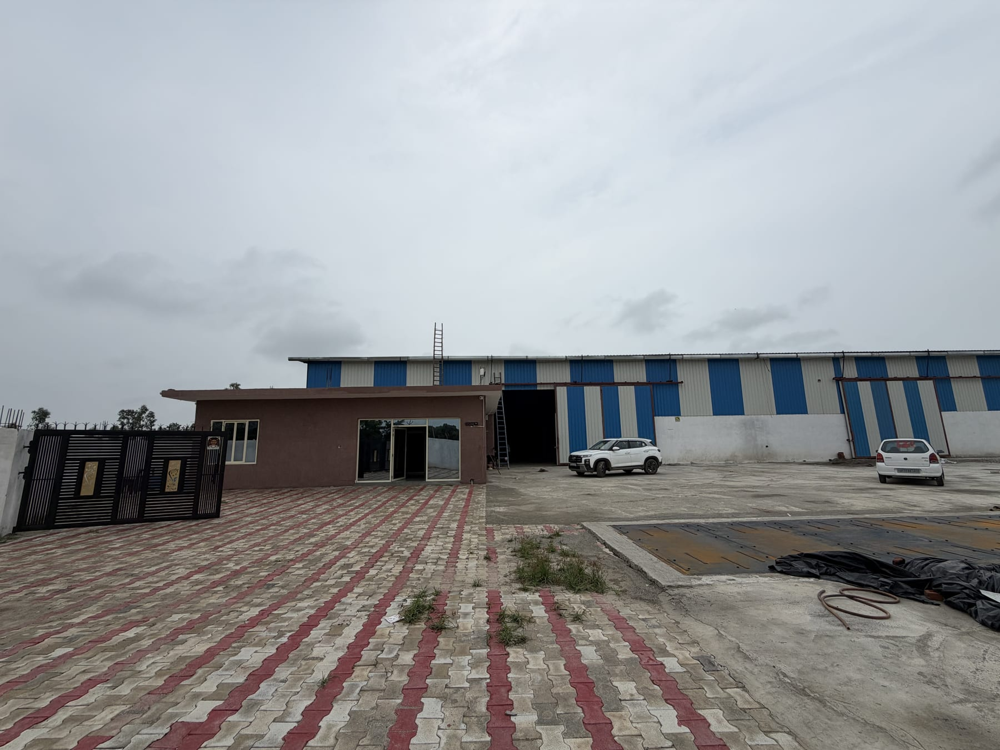
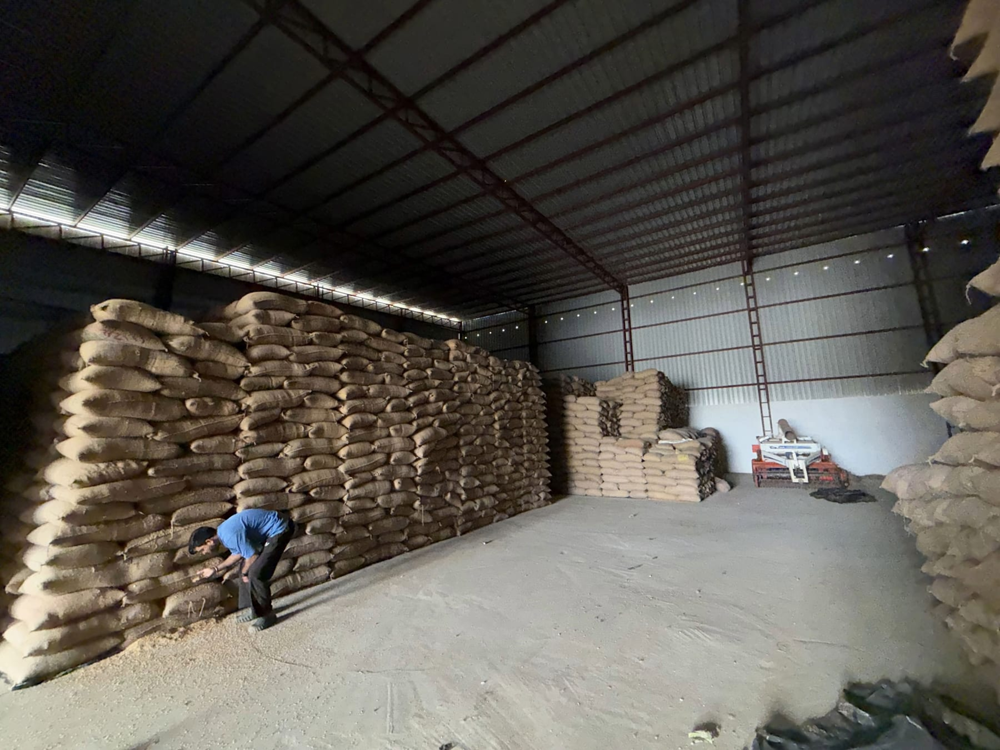
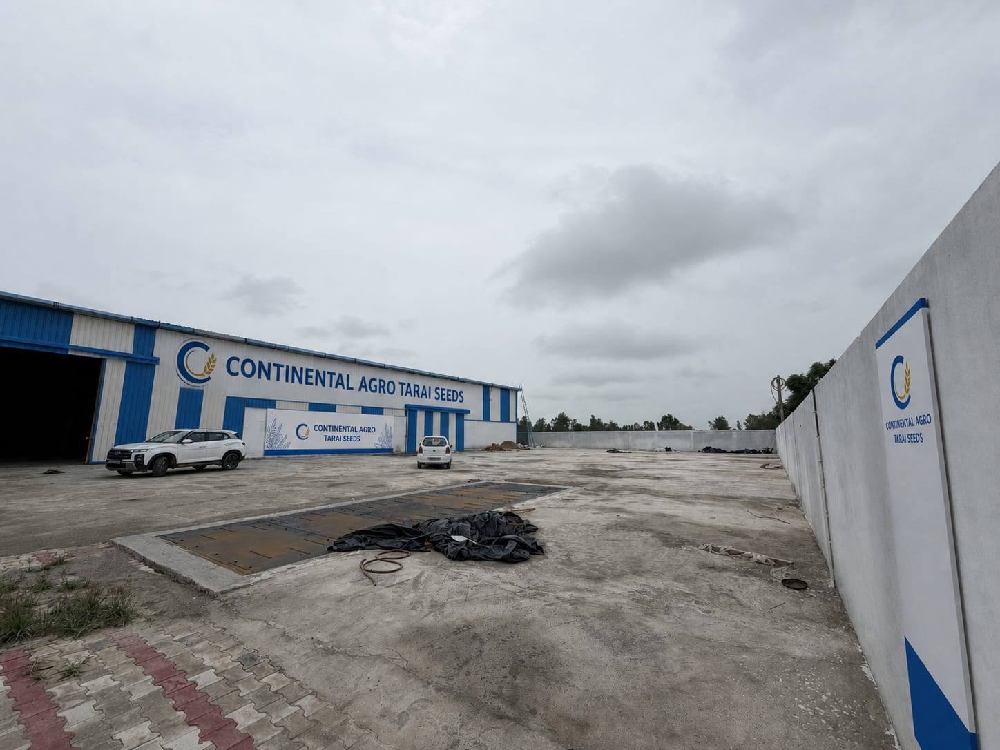

Storage Discipline
Cool, dry, and organized seed storage language supports pack trust and dealer confidence.
 Continental AgroTarai Seeds
Dealer Enquiry
Continental AgroTarai Seeds
Dealer Enquiry
Production & processing
Real facility visuals help dealers and buyers see that this is an operating seed business, not a generic brand page.
Facility workflow
The production page explains the practical flow of a wheat seed operation in original wording, without overstating certifications or capabilities not yet provided.



Cool, dry, and organized seed storage language supports pack trust and dealer confidence.
Clear batch, packing date, and best-before fields can support traceable conversations.
Current pack-size communication is kept consistent across the product and contact flow.